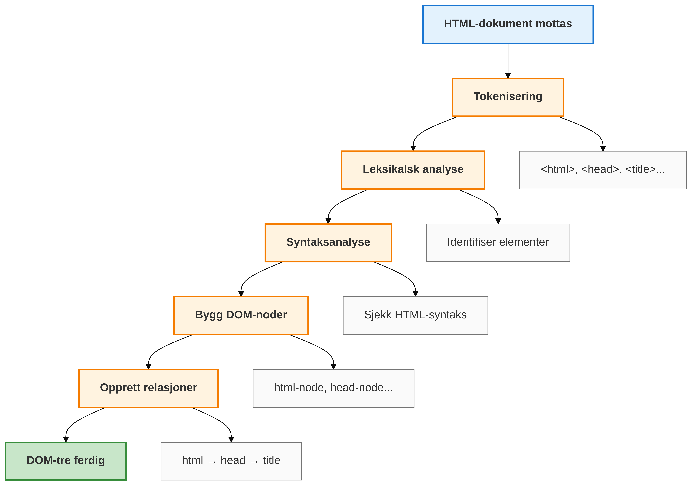
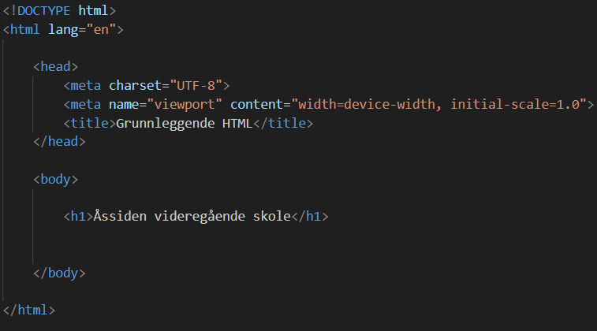
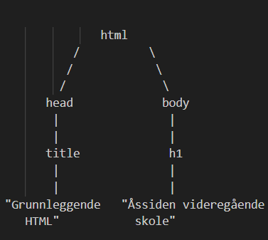
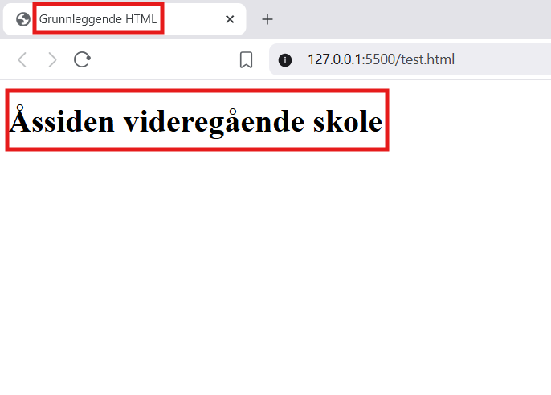

Har du noen gang lurt på hvordan nettsider blir til?
Svaret starter nesten alltid med HTML og CSS. HTML bygger selve skjelettet på en nettside – overskrifter, tekst, bilder og lenker. CSS gir sidene farge, form og stil. Sammen skaper de alt fra enkle blogger til avanserte nettbutikker.
Selv i en tid med moderne rammeverk som React, Angular og Vue, ligger HTML-strukturen fortsatt i bunnen. Når du forstår HTML og CSS, blir det mye enklere å lære nye verktøy og teknologier. Du får et solid fundament som gjør deg mer fleksibel og verdifull som utvikler eller designer.
I Norge er etterspørselen etter folk som kan bygge brukervennlige og pene nettsider fortsatt høy. Med kunnskap i HTML, CSS og JavaScript kan du åpne døren til en spennende karriere – enten du vil lage egne prosjekter, jobbe i et kreativt byrå eller bidra til å utvikle digitale løsninger for bedrifter.
Å lære HTML og CSS handler ikke bare om koding – det handler om å skape, forme og dele ideer med verden.
HTML: Hva er dette?
Internett er en del av hverdagen vår.
Du har sikkert bestilt bussbilletter, kjøpt pizza eller handlet klær via en nettside eller app.
Der kan du velge blant mange produkter og tjenester – presentert med bilder, tekst, videoer og kanskje til og med musikk.
Men selv om vi gjør dette daglig, er det fortsatt mange som ikke vet hvordan det egentlig fungerer. Hvordan dukker alle bildene,
beskrivelsene og knappene opp på skjermen din – enten du bruker mobil eller PC?
Svaret ligger i HTML – språket som bygger opp innholdet du ser på nettet. Velkommen til HTML-verden!
HTML er et markeringsspråk som brukes til å lage nettsider, webapplikasjoner,
desktop-applikasjoner og mobilapplikasjoner.
I dette prosjektet er det webutvikling og nettsider som er hovedtema, og vi skal derfor
ikke gå nærmere inn på de andre teknologiene som ble nevnt.
Et markeringsspråk er et regelsett som brukes til å definere formatering, struktur og innhold i et dokument ved hjelp av "tagger". En tagg kan beskrive hva slags data som skal vises.
I dette eksemplet kan vi si at hver eske tilsvarer en tagg,
mens innholdet i eskene tilsvarer dataen eller informasjonen som taggen omgir.
La oss si at vi har tre forskjellige esker, hver med sitt innhold:
- eske1 inneholder et par Nike-sko
- eske2 inneholder sjokolade
- Og eske3 inneholder pizza
Hvis vi bruker en kodeeditor, kan disse eskene – altså taggene – se slik ut:
Men ekte HTML-tagger ser slik ut:
Grunnleggende HTML-tagger og deres funksjon
HTML-taggene forteller nettleseren om innholdet og strukturen til de ulike
elementene på nettsiden. At overskrifter får større skriftstørrelse, eller
at lenker blir blå og understreket, er en tilleggseffekt som mange nettlesere
gir teksten for å synliggjøre elementenes rolle.
I dag skal utviklere bruke et eksternt CSS-dokument (stilark) for å angi instruksjoner som kun
påvirker nettsidens utseende, selv om enkelte eldre versjoner av HTML har støtte for dette direkte.
For funksjonalitet benyttes et scriptingspråk, hvor JavaScript er det mest brukte i dag.
Tagg
Forklaring
<!DOCTYPE html>
Deklarasjon som forteller nettleseren at dokumentet er skrevet i HTML5.
<html>
Den overordnede containeren for hele HTML-dokumentet.
<head>
Inneholder metadata om dokumentet, som for eksempel tegnsett og tittel.
<title>
Viser navnet på siden i nettleserens fane.
<body>
Inneholder det som vises på nettsiden, inkludert tekst, lenker, bilder, osv.
<h1>, <h2>, osv.
Overskrifter av forskjellige nivåer, hvor <h1> er den største og mest betydningsfulle.
<p>
Avsnitt som brukes for å gruppere tekst.
<a>
Anker-tagg som brukes til å lage lenker. href-attributtet angir hvor lenken går.
<ul> og <li>
En uordnet liste (ul står for "unordered list") og listeelementer (li står for "list item").
<br>
Linjeskift som brukes til å lage en ny linje uten å starte et nytt avsnitt.
<hr>
Horisontal linje som brukes til å visuelt dele opp innhold.
<img>
Brukes for å vise bilder på nettsiden.
<div>
En container som brukes til å gruppere innhold og strukturere siden.
Hva er en nettleser og hvordan fungerer?
Det å oppsummere hele prosessen av en nettleser i bare noen få ord er ikke en easy-task, men vi kan si at
en nettleser er et program som henter informasjon
og viser den på dataskjermen. En nettleser består vanligvis av
flere komponenter - funsjoner - med ulike oppgaver. Den viktigste komponenten er gjengivelsesmotoren
(rendering engine), som har som formål å hente og tolke HTML-kode. I denne prosessen
bygger nettleseren en trestruktur kalt DOM (Document Object Model), som definerer hierarkiet
til elementene på en nettside.
Diagrammet nedenfor kan vise grafisk en oppsummering av prosessen som foregår når nettleseren kjøres.

Diagrammet under viser et eksempel på DOM-hierarkiet av elementene.


<html> er rotelementet i dokumentet.
Alle andre elementer er etterkommere av dette.
<html> har to direkte barn: <head> og <body>. Head-elementet inneholder et title-element. Teksten "Grunnleggende HTML" er innholdet i title-elementet.
Body-elementet inneholder et h1-element (en overskrift). Teksten "Åssiden videregående skole" er innholdet i h1-elementet.
Etter DOM-strukturen er opprettet, vil nettleseren vise elementene på skjermen.

Introduksjon til GIT og GitHub
Hva er GIT?
Git er et versjonskontrollsystem (et dataprogram) som lar deg spore endringer i filer over tid.
Tenk på det som en "tidsmaskin" for koden din -
du kan alltid gå tilbake til tidligere versjoner hvis noe går galt.
Git er som å ta "øyeblikksbilder" (snapshots) av prosjektet
ditt hver gang du gjør endringer. Disse øyeblikksbildene kalles "commits".
Hva er GitHub
GitHub er en nettbasert plattform som bruker Git.
Det er som en "sky-lagring" for kodeprosjektene dine, men med superkrefter
for samarbeid.
Hvorfor bruker vi Git og GitHub?
Med versjonskontrollsystem kan du spore alle endringer i koden, og du kan enkelt gå tilbake
til en tidligere versjon. Om du samarbeider med andre elever med andre elever/utviklere kan du
se hvem som har gjort hvilke endringer og når. Flere elever kan jobbe på samme prosjekt samtidig
siden github tilatter dere automatisk sammensmelting av endringer med Konfliktløsning når flere
endrer samme fil. GitHub er perfekt for persjonell utvikling siden plataformen viser arbeidshistoriken
til potensielle arbeidsgivere. Github er i dag "standardverktøy" i IT-bransjen. Store og små bedrifter
i både offentlig-og private sektor bruker GIT og GitHub, og noen av disse er:
Etter installasjonen er ferdig åpne command Promt eller power shell og kjør "git --v"
Hvis GIT er korrekt installert så får du GTI-versjonen installert.
For macOS
Kjør brew install git i terminalen
Etter GIT er ferdig installert kjør "git --v"
Hvis GIT er korrekt installert så får du GTI-versjonen installert.
Oppgaver
Du skal velge mellom oppgave A og oppgave B.
Før du starter må du ha installert både Visual Studio Code og Git på PC-en,
og opprettet en GitHub-konto. Dette kan ta litt tid, så sørg for at du har alt
på plass så snart som mulig.